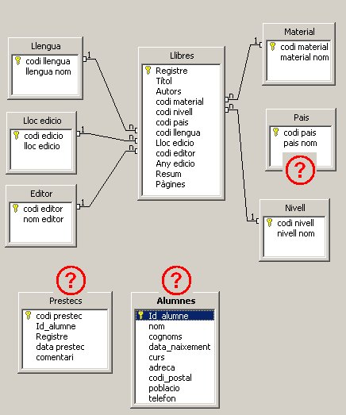

Per continuar, caldrà tenir a mà el fitxer de base de dades sobre el
que estem treballant en aquest curs des del mòdul 2: es tracta del
fitxer biblioteca.odb
Si el teniu a mà,no cal tornar-lo a descarregar. El que sí que has de
tenir en compte és que la situació en la qual es va quedar el fitxer a
final del mòdul 2 és la que representa aquesta imatge:

Per tant, tingueu present que estaven fetes moltes de les relacions.
Observant la imatge, i a mode de recordatori, cal dir que el fitxer biblioteca.odb
conté una taula central amb molts registres (Llibres) i unes quantes de
més petites que caldrà relacionar amb l'anterior. Són 9 taules en
total, les quals es relacionen de forma directa amb la taula Llibres, i
només una (Alumnes) ho fa de forma indirecta mitjançant la taula
intermèdia Prestecs.
Una imatge de la llista de taules és aquesta que ja coneixeu per la
feina feta en l'anterior mòdul:
Aquestes dades, com podreu veure, contenen molts camps tipus codi, que més tard comentarem.
Per tant, un cop recuperat el fitxer esmentat, ja podrem obrir-lo i començar la feina de preparació amb ell.
Obriu el fitxer de la Biblioteca.
Un cop obert, el que es mostra és la part de formularis, que està buida.
Si cliquem a l'apartat de “taules” apareixerà a la vista el que mostra la següent imatge:
En ella podrem veure una sèrie de taules que abans s'han esmentat.
Comencem a veure el contingut de les taules. Si, en primer lloc, obrim la taula Llibres amb un doble clic podrem apreciar el seu extens contingut: conté molts registres de dades de llibres d'una biblioteca escolar d'un centre públic de Catalunya.
Anem a fer unes operacions senzilles per apreciar les dades que conté:
Bé, per tant, veiem que es tracta d'un fitxer força gran, amb molts
registres que ens aniran molt bé per fer consultes variades, que és
l'objectiu principal d'aquest mòdul.
Per tant, pensem que la feina que ens obligui a fer en el moment que
substituïm els contingut dels camps com el cas dels que apareixen codis
enlloc de descripcions, després ho guanyem en espai i en facilitat de
treball.
…entrarem en el disseny de la taula, representat en la següent imatge:
Aquí podem veure tots els noms de camps i els tipus de cadascun d'ells.
També veiem que no hi ha cap camp clau i que caldria crear-lo ara
mateix. Fem clic a l'esquerra del nom del camp Registre i amb el botó
secundari del ratolí, triem l'opció Clau primària, com es veu en la
següent imatge:
Un cop fet això veurem el camp Registre que s'ha convertit en el Clau de la seva taula:
Ara només ens faltarà que tancar la taula i desar els canvis.
Podem fer operacions semblants amb la resta de les taules, comprovant el seu disseny i també el seu contingut. De moment l'espai que ocupa la base de dades no és massa gran per la gran quantitat de dades que conté. A mesura que anem treballant amb ell, l'augment de la mida del fitxer experimentarà un fort creixement.
Finalment, per poder treballar de forma més completa amb aquest fitxer anomenat biblioteca.odb,
només ens cal una darrera acció: crear les relacions entre les tres
taules que encara falta. Per fer-ho, cal entrar a l'opció del menú
Eines | Relacions.
Cas de que faltés a la vista del disseny de les relacions alguna de les taules, amb el botó es poden mostrar el llistat de totes les taules i mitjançant el botó d'Afegir taula, la podrem incorporar a la pantalla.
Molt important: pensem que hem de tenir en compte uns aspectes previs inicials com són aquests:
L'única excepció a això és la relació que cal establir entre Llibres i Prestecs.
Les anem creant una a una arrossegant els camps des del costat u fins al costat n (que és en tots els casos, tal com s'ha dit, els camps de la taula Llibres.)
Anem fent, i tot sembla anar bé. Però en el moment de voler relacionar la taula Pais, ens surt aquest missatge d'avís com que la cosa no funciona:
Ara caldrà investigar perquè falla. Normalment és perquè hi ha algun registre de la taula Llibres que no té la dada donada prèviament a la taula Pais, és a dir, que estem assignant a algun llibre un codi de país que no s'ha donat d'alta en la taula Pais. Cal repassar i comparar les dades de les dues taules per solucionar-ho. Un cop revisades les dades, es pot apreciar que en la taula Llibres, el país Estat Units figura com a codi “USA” i en la taula Pais, els Estat Units figuren com a “usa”, per la qual cosa el programa detecta que no és igual i no deixa fer la relació. Si anem a una de les dues taules, a Pais serà més fàcil de localitzar i canviem les minúscules per la majúscules, ja ens deixarà fer la relació entre aquestes dues taules.
Ara cal completar les relacions de la següent forma:
Resposta: No, cada llibre té el seu propi registre de préstec.
* El raonament per Alumnes amb Prestecs és aquest:
- Un alumne pot tenir varios préstecs en la nostra base de dades? Resposta: sí.
Resposta: No, cada alumne i llibre tenen el seu propi registre de préstec.
Bé, ara que sabem què hem de fer, provem de dur-ho a la pràctica. Comencem a fer la relació entre les taules Llibres i Prestecs i després entre Alumnes i Prestecs.
La primera d'elles no hi ha cap problema, arrosseguem el camp Registre de la taula Llibres a sobre del camp Registre de la taula Prestecs i feina feta.
Quant a la segona, en el moment d'intentar fer l'arrossegament entre
el camp Id_alumne de la taula Alumne sobre el camp Id_alumne de la
taula Prestecs, ens dóna aquest missatge d'errada:
Un altre de les possibles errades en les relacions és que els tipus dels camps que es volen relacionar entre sí, no siguin compatibles, és a dir, un camp tipus text amb un altre tipus numèric no es poden relacionar. Això ens obliga a repassar el disseny de les dues taules implicades en la relació i comprovar si el camp Id_alumne és del mateix tipus o no.
La imatge següent mostra les dues taules en mode disseny i tal com es pot veure, en una d'elles és tipus text i en l'altra és numèric. Per crear la mínima distorsió convindria canviar el camp que no és clau dels dos, d'aquesta forma tindrem menys problemes, en aquest cas, canviar el camp de la taula Prestecs (que a més a més la tenim buida de dades, i correm menys risc de pèrdua d'informació)
Un cop fet aquest canvi, ja ens deixarà establir totes les relacions i la finestra que quedarà així:
Ara ja tenim el camp preparat per a treballar amb les consultes.
Seguiu aquestes petites intruccions i ho aconseguireu:
Els resultats són força bons, tenim les dades convertides al nou format sense pérdues d'informació.

|
|

|
|